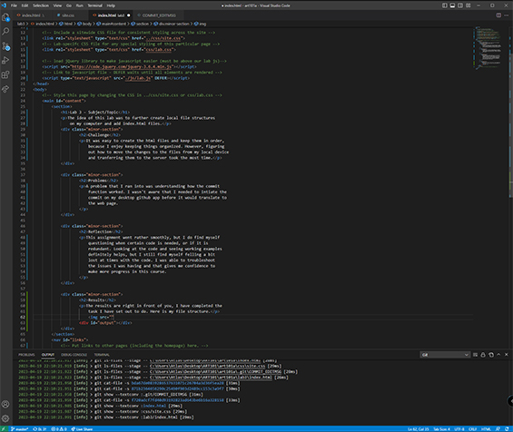

Lab 3 - Subject/Topic
The idea of this lab was to further create local file structures on my computer and add index.html files.
Challenge
It was easy to create the html files and keep them in order, because I enjoy keeping things organized. However, figuring out how to move the changes to the files from my local device and tranferring them to the server took the most time.
Problems
A problem that I ran into was understanding how the commit function worked. I wasn't aware that I needed to intiate the commit on my desktop github app before it would translate to the web page.
Reflection
This assignment went rather smoothly, but I do find myself questioning when certain code is needed, or if it is redundant. Looking at the code and seeing working examples definitely helps, but I still find myself felling a bit lost at times with the code. I was able to troubleshoot the issues I was having and that gives me confidence to make more progress in this course.
Results
The results are right in front of you, I have completed the task I have set out to do. Here is my file structure.
